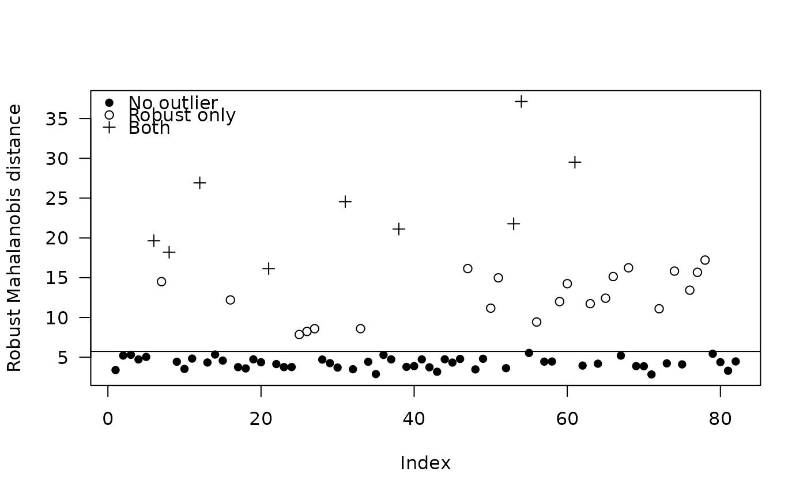
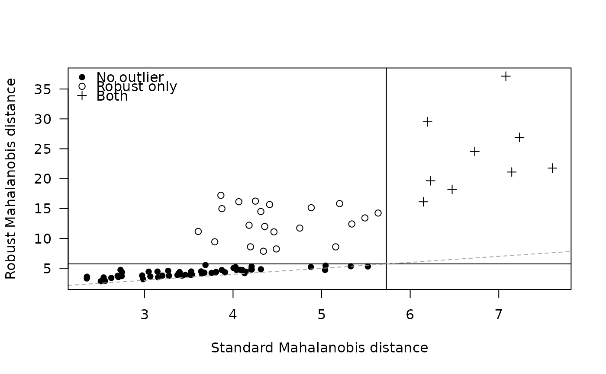
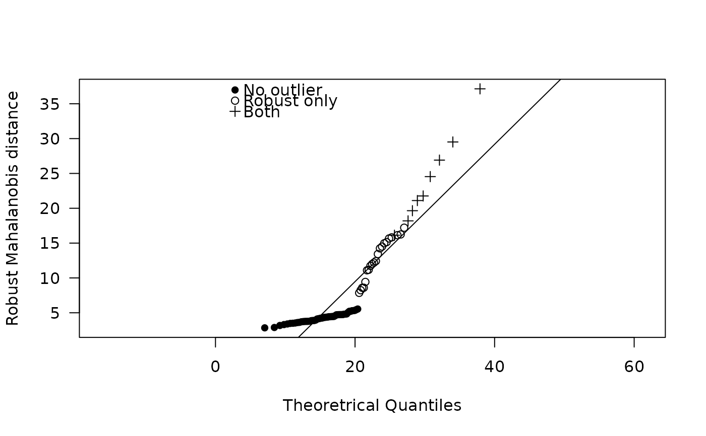
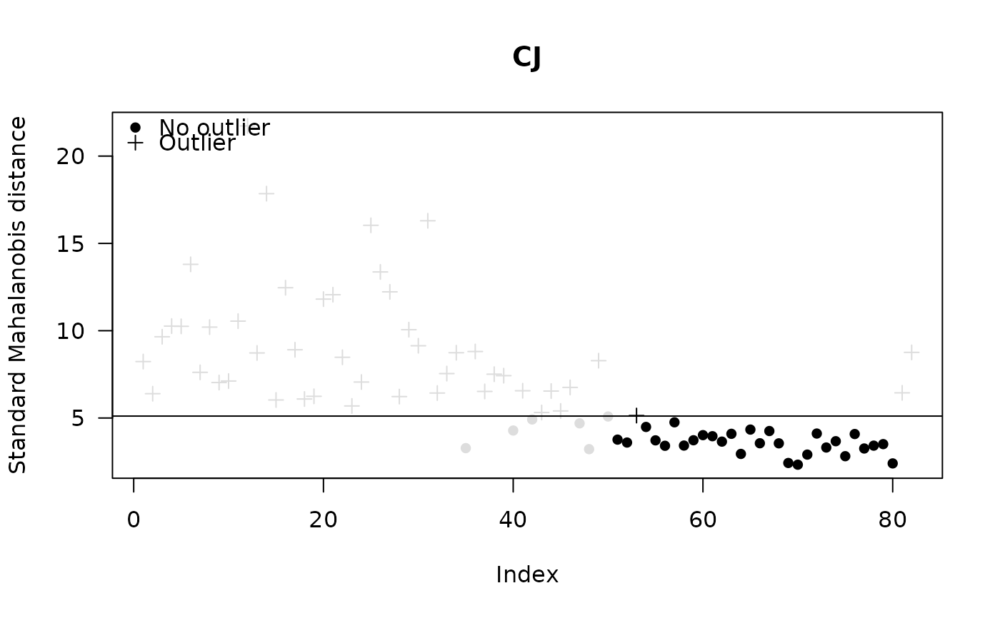
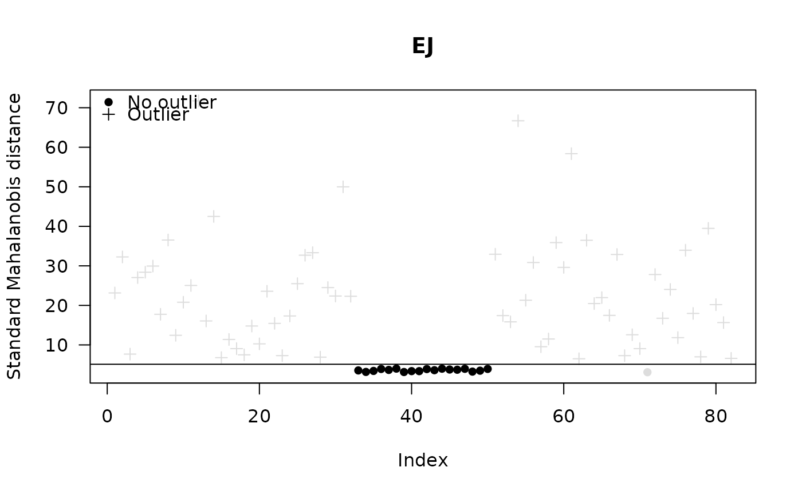
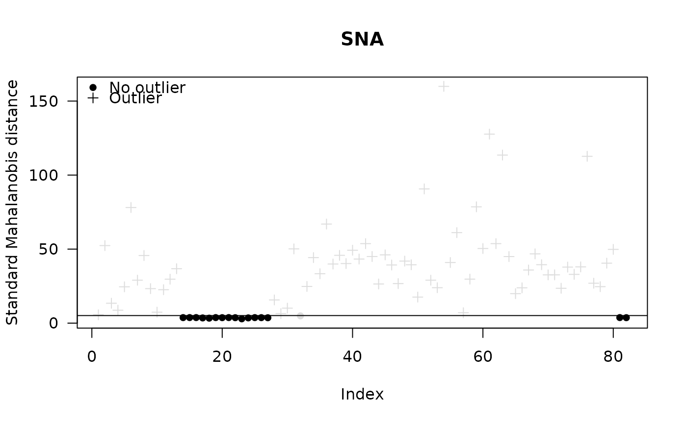
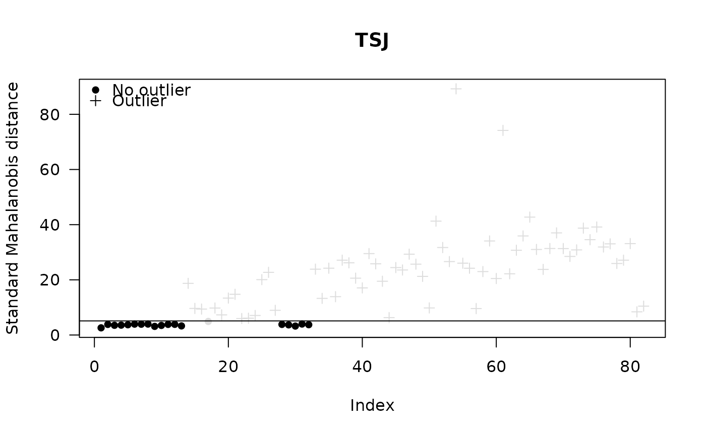

Plot Outliers
Usage
# S4 method for OutlierIndex,missing
plot(
x,
...,
select = 1,
type = c("dotchart", "distance", "qqplot"),
robust = TRUE,
pch = c(16, 1, 3),
xlim = NULL,
ylim = NULL,
xlab = NULL,
ylab = NULL,
main = NULL,
sub = NULL,
ann = graphics::par("ann"),
axes = TRUE,
frame.plot = axes,
panel.first = NULL,
panel.last = NULL,
legend = list(x = "topleft")
)Arguments
- x
An
OutlierIndexobject.- ...
Further graphical parameters.
- select
A length-one vector giving the group to be plotted.
- type
A
characterstring specifying the type of plot that should be made. It must be one of "dotchart", "distance" or "qqplot". Any unambiguous substring can be given.- robust
A
logicalscalar: should robust Mahalanobis distances be displayed? Only used iftypeis "dotchart" or "qqplot".- pch
A lenth-three vector of symbol specification for non-outliers and outliers (resp.).
- xlim
A length-two
numericvector giving the x limits of the plot. The default value,NULL, indicates that the range of the finite values to be plotted should be used.- ylim
A length-two
numericvector giving the y limits of the plot. The default value,NULL, indicates that the range of the finite values to be plotted should be used.- xlab, ylab
A
charactervector giving the x and y axis labels.- main
A
characterstring giving a main title for the plot.- sub
A
characterstring giving a subtitle for the plot.- ann
A
logicalscalar: should the default annotation (title and x and y axis labels) appear on the plot?- axes
A
logicalscalar: should axes be drawn on the plot?- frame.plot
A
logicalscalar: should a box be drawn around the plot?- panel.first
An an
expressionto be evaluated after the plot axes are set up but before any plotting takes place. This can be useful for drawing background grids.- panel.last
An
expressionto be evaluated after plotting has taken place but before the axes, title and box are added.- legend
A
listof additional arguments to be passed tographics::legend(); names of the list are used as argument names. IfNULL, no legend is displayed.
Value
plot() is called for its side-effects: is results in a graphic being
displayed (invisibly return x).
References
Filzmoser, P., Garrett, R. G. & Reimann, C. (2005). Multivariate outlier detection in exploration geochemistry. Computers & Geosciences, 31(5), 579-587. doi:10.1016/j.cageo.2004.11.013 .
Filzmoser, P. & Hron, K. (2008). Outlier Detection for Compositional Data Using Robust Methods. Mathematical Geosciences, 40(3), 233-248. doi:10.1007/s11004-007-9141-5 .
Filzmoser, P., Hron, K. & Reimann, C. (2012). Interpretation of multivariate outliers for compositional data. Computers & Geosciences, 39, 77-85. doi:10.1016/j.cageo.2011.06.014 .
See also
Other outlier detection methods:
outliers()
Examples
## Data from Day et al. 2011
data("kommos", package = "folio") # Coerce to compositional data
kommos <- remove_NA(kommos, margin = 1) # Remove cases with missing values
coda <- as_composition(kommos, groups = 1) # Use ceramic types for grouping
## Detect outliers
out <- outliers(coda, groups = NULL, method = "mcd")
plot(out, type = "dotchart")

plot(out, type = "distance")

plot(out, type = "qqplot")

## Detect outliers by group
out <- outliers(coda[, 1:15], method = "mcd")
#> Warning: EJ: possibly too small sample size (18).
#> SNA: possibly too small sample size (16).
#> TSJ: possibly too small sample size (18).
plot(out, type = "dotchart", select = 1, robust = FALSE)

plot(out, type = "dotchart", select = 2, robust = FALSE)

plot(out, type = "dotchart", select = 3, robust = FALSE)

plot(out, type = "dotchart", select = 4, robust = FALSE)
